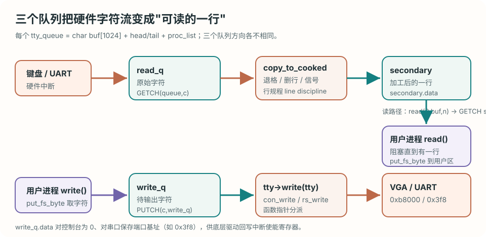
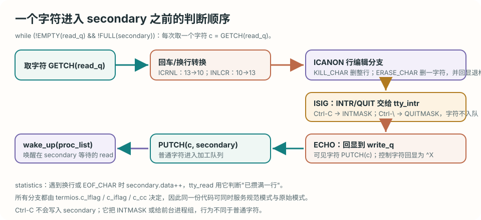

tty、控制台与行规程：字符流如何变成一行输入
从三个队列和 termios 标志出发，说明键盘字符为什么先进入 read_q，经过行规程加工后才出现在 secondary，以及控制台驱动怎样把写队列渲染成屏幕像素。
字符设备 · tty / console / line discipline为什么 read() 要等回车才返回？
在默认的规范（canonical）模式里，用户在终端敲下 l、s、回车。屏幕立刻显示 ls，但真正调用 read(0, buf, n) 的 shell 直到回车才被唤醒。要解释这个延迟，不能只看 read() 的目标缓冲区，还要看内核把每个字符放在了哪里、什么时候才认为一行已经完整。
Linux 0.11 的答案在一个统一抽象里：每个终端对应一个 tty_struct，它挂着三个队列。硬件中断只把原始字符放进 read_q；行规程（line discipline）再把它们加工后放进 secondary；用户 read() 只从 secondary 取字符。回车之所以关键，是因为它既是行规程的加工对象，也是这一行可以交付的信号。
tty_struct 与三队列模型
include/linux/tty.h 里 tty_struct 由 termios、前台进程组 pgrp、一个 write 函数指针和三个 tty_queue 组成。每个队列不是数组指针，而是一个 1024 字节的 char buf[TTY_BUF_SIZE] 加 head/tail 环状下标：
#define TTY_BUF_SIZE 1024
struct tty_queue {
unsigned long data;
unsigned long head;
unsigned long tail;
struct task_struct * proc_list;
char buf[TTY_BUF_SIZE];
};
struct tty_struct {
struct termios termios;
int pgrp;
int stopped;
void (*write)(struct tty_struct * tty);
struct tty_queue read_q, write_q, secondary;
};tty_table[] 在这个版本里只有三项：控制台、串口 1（端口基址 0x3f8）、串口 2（0x2f8）。read_q.data 对串口保存端口基址，对控制台是 0，它不是字符缓冲区本身。

tty_struct，但经过和消费的队列不同。箭头表示数据方向，不代表函数调用栈。tty_read 与 tty_write 的两条路径
kernel/chr_drv/tty_io.c 的 tty_read(channel, buf, nr) 首先把 channel>2 当成错误返回 −1，然后从 termios.c_cc[VMIN] 和 [VTIME] 计算最少返回字节数与超时。循环里如果 secondary 为空，就调用 sleep_if_empty() 睡在 secondary.proc_list 上，直到行规程唤醒它。
if (EMPTY(tty->secondary) || (L_CANON(tty) &&
!tty->secondary.data && LEFT(tty->secondary)>20)) {
sleep_if_empty(&tty->secondary);
continue;
}
do {
GETCH(tty->secondary,c);
if (c==EOF_CHAR(tty) || c==10)
tty->secondary.data--;
...
put_fs_byte(c,b++);
} while (nr>0 && !EMPTY(tty->secondary));关键判断是 L_CANON(tty) && !tty->secondary.data：在规范模式下，只有 secondary.data（换行计数）非零时才会开始交付。这解释了开头那个延迟——行规程不把回车写进 secondary，tty_read 就宁可继续睡。写路径 tty_write 少见地简单：用 get_fs_byte(b) 取用户字符，若 O_POST 开启则做 ONLCR 换行转换（\n 展开为 \r\n），PUTCH 进 write_q，最后调用函数指针 tty->write(tty) 让底层驱动真正搬运。“面向对象”的多态在这里由一个函数指针完成。
为什么 tty_write 需要 sleep_if_full？ （展开核对）
当 write_q 接近满（FULL 或 LEFT(queue)<128）时，底层驱动还没来得及把字符写走，必须先把当前任务睡到 write_q.proc_list，否则会覆盖未发送的数据。
行规程 copy_to_cooked：一个字符的多重判断
行规程主体是 copy_to_cooked(struct tty_struct *tty)。它在 read_q 非空且 secondary 未满时循环，每次用 GETCH(tty->read_q,c) 取一个字符，然后按 termios 标志分层判断：回车换行转换（ICRNL/INLCR）、ICANON 下的删行（KILL_CHAR）与退格（ERASE_CHAR）、ISIG 下的 Ctrl-C / Ctrl-\ 转成信号、ECHO 回显。它把这些字符同时分流到 secondary 和 write_q。

ISIG 分支就被转成信号并 continue，不会进入 secondary，也就不会被用户程序读到。退格分支不会真的从物理内存里抹掉字节：它是把 tail 回退（DEC(tty->secondary.head) 与 LAST() 配合），并在 write_q 里补一对 0x7f 完成屏幕回退。当字符是换行或 EOF_CHAR 时，代码执行 tty->secondary.data++——这个计数正是 tty_read 等待的“一行到齐”信号。循环末尾 wake_up(&tty->secondary.proc_list) 唤醒读者；除此之外，do_tty_interrupt 在中断上下文里直接调用 copy_to_cooked。
控制台如何写进 VGA 显存
kernel/chr_drv/console.c 的 con_init() 从 BIOS 存放在 0x90004 起的参数读出屏幕列数、行数和当前页，再根据显示卡类型选择显存基址。彩色显示时 video_mem_start = 0xb8000，寄存器端口对 0x3d4/0x3d5；单色时为 0xb0000 与 0x3b4/0x3b5。文本模式下每个字符占两个字节（字符码 + 属性），所以 video_size_row = 列数 * 2，擦除字符 video_erase_char = 0x0720。
video_mem_start = 0xb8000;
video_port_reg = 0x3d4;
video_port_val = 0x3d5;
video_erase_char = 0x0720;
...
outb_p(14, video_port_reg);
outb_p(0xff&((pos-video_mem_start)>>9), video_port_val);
outb_p(15, video_port_reg);
outb_p(0xff&((pos-video_mem_start)>>1), video_port_val);屏幕上的位置由三个状态量描述：origin 是当前页左上第一个字节，pos 是下一个字符要写的地址，scr_end 是当前页末尾。滚屏时 scrup() 并不总是把 4000 字节整体搬一遍：当已滚动到显存末尾时，它会把 origin 往前推一行，只把新出现的一行清成擦除字符，再用 set_origin() 把页起点写回 CRTC 的 12/13 号寄存器。
con_write() 本身是一个转义序列解析状态机：普通字符直接写入 pos 并前进；遇到 \033[ 开头的 CSI 时进入参数收集，处理 m（颜色属性）、H（定位）、J/K（清屏/清行）等少数子集，而不是现代终端的完整能力。
只读验证与正确边界
在 v0.11 源码根目录执行下面命令，只看结构事实，不需要编译或启动模拟器：
grep -n 'TTY_BUF_SIZE\|struct tty_queue\|struct tty_struct' include/linux/tty.h
grep -n 'copy_to_cooked\|GETCH(tty->read_q\|secondary.data++' kernel/chr_drv/tty_io.c
grep -n 'video_mem_start = 0xb8000\|video_erase_char\|outb_p(14' kernel/chr_drv/console.c预期分别找到 1024 字节队列定义、行规程取字符与计数语句、彩色显存基址与光标寄存器写入。这是源码静态实验，不代表在模拟器里实际敲过键盘，也不能推出真实终端吞吐量。本章不声称重编或运行了 0.11 内核。
原始资料与下一章
- include/linux/tty.h：tty_struct、tty_queue、INIT_C_CC。
- kernel/chr_drv/tty_io.c：tty_read、tty_write、copy_to_cooked、tty_intr。
- kernel/chr_drv/console.c：con_init、con_write、scrup/set_origin。
- kernel/chr_drv/serial.c：rs_init 与 rs_write 的端口编程。
- kernel/chr_drv/keyboard.S：扫描码如何送入 read_q（下一章）。
键盘中断把扫描码写进哪个队列？串口中断又靠什么寄存器触发？下一章沿着 keyboard.S 与 serial.c 看字符如何从硬件进入 read_q。